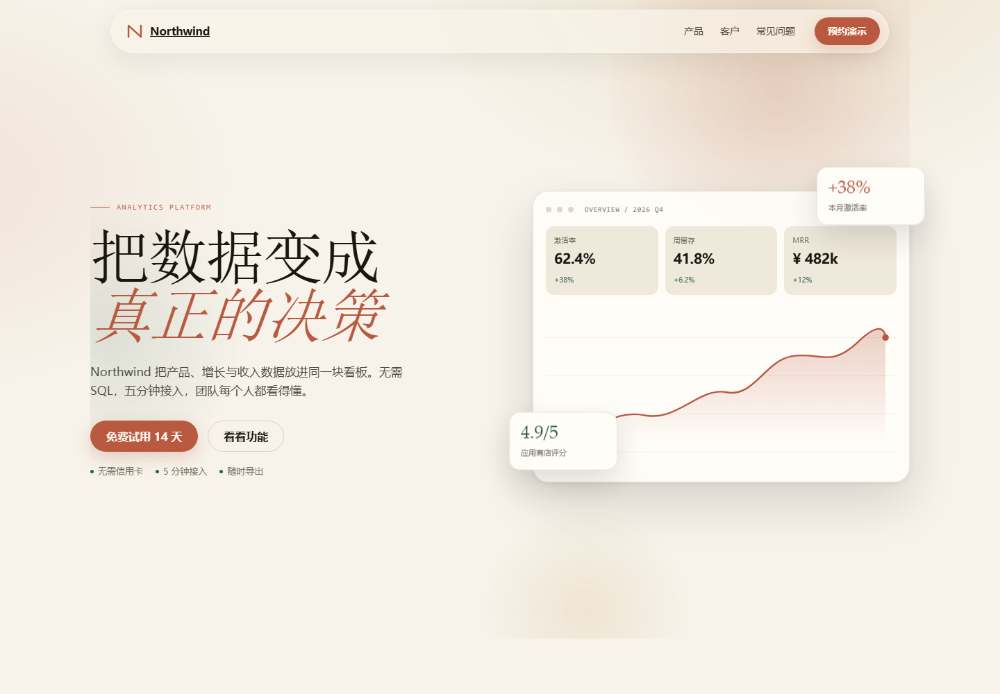
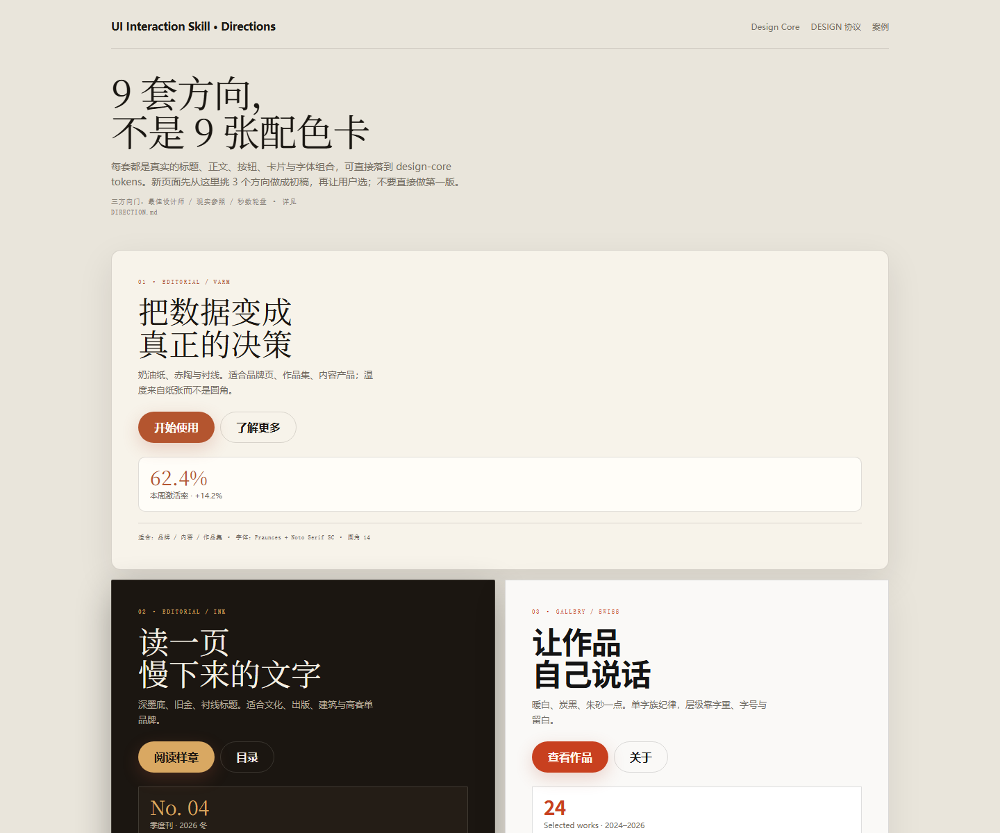

CASE 01 / BEFORE → AFTER
Northwind Analytics
同一份文案与信息结构：体检 36 项 → 0；视差、揭示、磁吸、倾斜、snap、details、dialog 全链路。
Case gallery
每个案例都从真实页面/内容出发：方向 → 体检 → Before/After → 6 维评审 → PDF/PNG。不是只换一张皮。

同一份文案与信息结构：体检 36 项 → 0；视差、揭示、磁吸、倾斜、snap、details、dialog 全链路。

editorial / gallery / deep-space / old-money / soft 的真实标题、正文、按钮与字体组合。